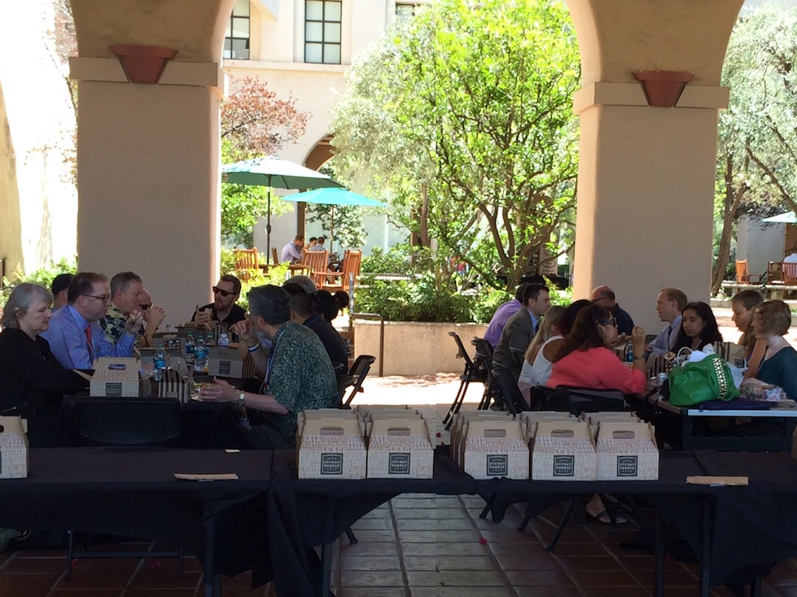
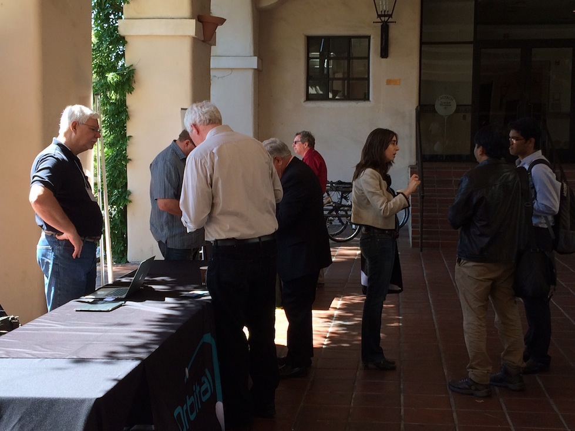
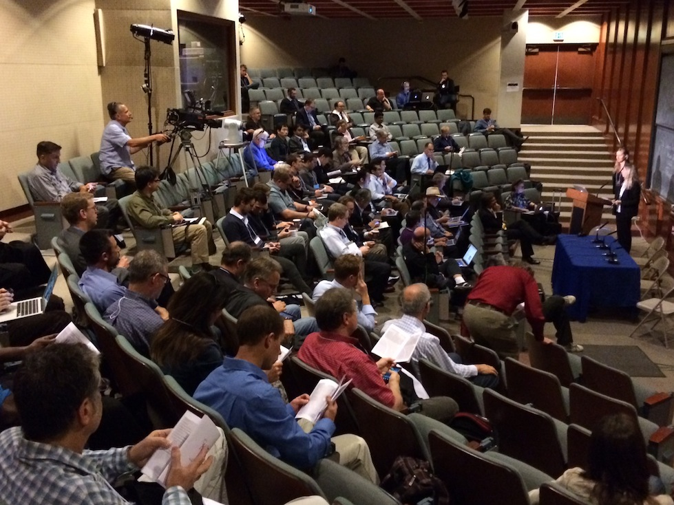
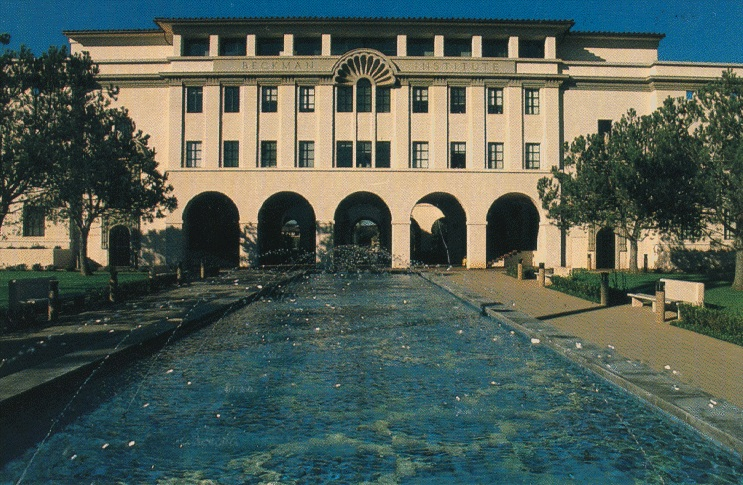

25-26 April 2016
California Institute of Technology
Pasadena, California



ISSC
2016
Next year's Interplanetary Small Satellite Conference conference will take place at the California Institute of Technology on 25-26 April, 2016. As in years past, this conference is organized by students, alumni, and staff from Caltech, MIT, Cornell, the University of Michigan, and JPL. We look forward to welcoming the community back to ISSC to explore mission concepts, discuss emerging technologies, and foster “outside the box” thinking that will be critical to future interplanetary small satellite missions.
ISSC
Keynote Speakers
Larry D. James, Deputy Director of JPL
Larry D. James was appointed Deputy Director of the Jet Propulsion Laboratory in August 2013. At JPL he is the Laboratory’s Chief Operating Officer responsible to the Director for the day-to-day management of JPL’s resources and activities. This includes managing the Laboratory’s solar system exploration, Mars, astronomy, physics, Earth science, interplanetary network programs, and all business operations. These activities employ 5000 scientists, engineers, technicians, and business support personnel, generating $1.5 billion in annual revenues.
Prior to his retirement from the Air Force and his appointment as JPL Deputy Director, Lt. Gen. James was the Air Force Deputy Chief of Staff for Intelligence, Surveillance and Reconnaissance at the Pentagon. He was responsible to the Secretary and Chief of Staff of the Air Force for policy formulation, planning, evaluation, oversight, and leadership of Air Force intelligence, surveillance and reconnaissance capabilities. As the Air Force's Senior Intelligence Officer he was directly responsible to the Director of National Intelligence and the Under Secretary of Defense for Intelligence and led more than 20,000 ISR officers, enlisted and civilians across the Air Force ISR Enterprise.
Lt Gen James received his Bachelor of Science in Astronautical Engineering (1978) from the US Air Force Academy (Distinguished Graduate) and his Master of Science in Aeronautics and Astronautics (1983) from the Massachusetts Institute of Technology, Cambridge MA. He was also a Draper Fellow at the Charles Stark Draper Laboratory in Cambridge MA.
James’ 35 year military career included assignments as a Space Shuttle Payload Specialist, GPS Program Manager, Titan IV Launch Director and Commander of the 50th Space Wing at Schriever AFB, CO. James has also served on the staffs of US Space Command, Air Force Space Command, and HQ Air Force. He was commander of the 14th Air Force at Vandenberg AFB, CA, responsible for all military satellite, launch and C2 operations, and was Director, Signals Intelligence Systems Acquisition and Operations Directorate, National Reconnaissance Office, Washington, D.C. He was the Director, Space Forces for Operation Iraqi Freedom at the Combined Air Operations Center, Prince Sultan Air Base, Saudi Arabia.
MAJOR AWARDS AND DECORATIONS
Defense Superior Service Medal with oak leaf cluster
Legion of Merit with three oak leaf clusters
Bronze Star Medal
Meritorious Service Medal with three oak leaf clusters
Air Force Commendation Medal
Mark Robinson
Mark Robinson's research interests are currently focused on the origin and evolution of planetary crusts, including volcanism, tectonism, and regolith development. Investigations are approached using a variety of remote sensing techniques: multispectral imaging, spectroscopy, stereo analysis, photoclinometry, and geomorphology utilizing datasets from Apollo, Lunar Orbiter, Clementine, Galileo, NEAR, Lunar Prospector, Mariner 10, and MESSENGER.
Announcements
Please check the website later for updates.
Previous Conferences

The Interplanetary Small Satellite Conference is currently in its third year. Please click the link below to access papers, presentations, and other information about last year's conference. This page will be used to archive conference materials as this event continues in future years.